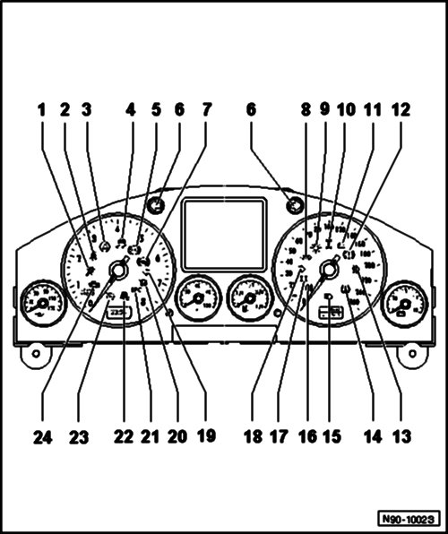
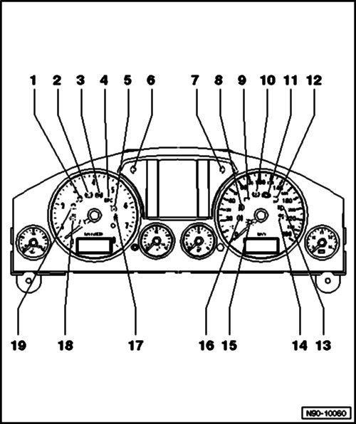
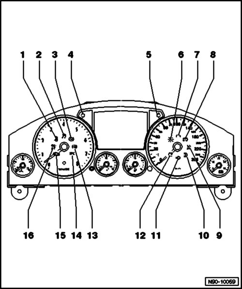

Electronic Throttle Control Indicator: Locations
Instrument Cluster Indicator Lamp Symbols, Through 11.06
Note
Applicability and layout of instrument cluster warning and indicator lamps are market and engine dependent.
Different instrument clusters are used, depending on vehicle equipment. Some lamps illustrated here may not apply to US/Canadian models.

1 - Airbag Or Seatbelt Tensioner System
2 - Seat Belts
3 - Electronic Stability Program (ESP)
4 - ESP-System Light (ASR/ESC)
5 - Anti-Lock Braking System (ABS)
6 - Left/Right Turn Signal Indicator (Turn Signal/Emergency Flasher System)
7 - Rear Fog Lamps
8 - Trailer Turn Signals
9 - Lamp Failure
10 - Offroad
11 - Generator Load Control
12 - Brake Indicator/Parking Brake Indicator
13 - Fog Lamps
14 - Tire Pressure Monitoring Indicator
15 - High Beam Headlamp
16 - Rear Fog Lamps
17 - Shift Lock
Warning lamp only present in vehicles with automatic transmission.
18 - Right Turn Signal Indicator (Turn Signal/Emergency Flasher System)
19 - Left Turn Signal Indicator (Turn Signal/Emergency Flasher System)
20 - Glow Plug System
Indicator lamp only present in vehicles with diesel engine.
21 - Electronic Power Control (EPC)
Indicator lamp only present in vehicles with gasoline engine.
22 - Decoupled Offroad Stabilizer
23 - Cruise Control System
24 - Malfunction Indicator Lamp (MIL)
Instrument Cluster Indicator Lamp Symbols with Monochrome Display, From 12.06
Instrument cluster equipment version Highline
Note
Applicability and layout of instrument cluster warning and indicator lamps are market and engine dependent.
Different instrument clusters are used, depending on vehicle equipment. Some lamps illustrated here may not apply to US/Canadian models.

1 - Electronic Stabilization Program (ESP)
Lit up: ESP damaged or manually switched off
Blinking: ESP regulating
2 - Anti-Lock Braking System (ABS)
3 - Operate Footbrake
4 - EPC - Malfunction In Gasoline Engine
Indicator lamp only present in vehicles with gasoline engine
5 - Cruise Control Switched On
6 - Left Turn Signal Indicator (Turn Signal/Emergency Flasher System)
7 - Right Turn Signal Indicator (Turn Signal/Emergency Flasher System)
8 - Fog Lights Switched On
9 - Malfunction In Generator
10 - Brake Control Light
Brake fluid lever too low or
Malfunction in brake system or
Parking brake activated
11 - Engine Malfunction (On Board Diagnostic)
12 - Daytime Running Lights Switched On
13 - High Beams Switched On
14 - Airbag Or Seatbelt Tensioner System
Airbag or belt tensioner system faulty or Passenger airbags switched off
15 - Lamp Failure
Lit up: Bulb failure
Blinking: dynamic or static cornering light faulty
16 - Fog Lights Switched On
17 - Fasten Seat Belts!
18 - Side Assist Lane Change Assist Switched On
19 - Front Assist Distance Regulation Switched On
Depending on equipment, some warning and indicator lights are also shown in the instrument cluster display. Malfunctions are sorted according to priority and are shown in the display with red or yellow symbols and additional information
Instrument Cluster Indicator Lamp Symbols with Color Display, From 12.06
Instrument cluster equipment version Premium
Note
Applicability and layout of instrument cluster warning and indicator lamps are market and engine dependent.
Different instrument clusters are used, depending on vehicle equipment. Some lamps illustrated here may not apply to US/Canadian models.

1 - Fasten Seat Belts!
2 - Electronic Stabilization Program (ESP)
Lit up: ESP damaged or manually switched off
Blinking: ESP regulating
3 - Anti-Lock Braking System (ABS)/Electronic Differential Lock (EDS)
Malfunction in ABS system
Electronic differential lock (EDS) malfunction
4 - Left Turn Signal Indicator (Turn Signal/Emergency Flasher System)
5 - Right Turn Signal Indicator (Turn Signal/Emergency Flasher System)
6 - Lamp Failure
Lit up: Bulb failure ? Blinking: dynamic or static cornering light faulty
7 - Malfunction in Generator
8 - Brake Control Light
Brake fluid lever too low or
Malfunction in brake system or
Parking brake activated
9 - Fog Lights Switched On
10 - Daytime Running Lights Switched On
11 - High Beams Switched On
12 - Fog Lights Switched On
13 - Operate Footbrake
14 - EPC - Malfunction in Gasoline Engine
Indicator lamp only present in vehicles with gasoline engine
15 - Engine Malfunction (On Board Diagnostic)
16 - Airbag or Seatbelt Tensioner System
Airbag or belt tensioner system faulty or
Passenger airbags switched off
Depending on equipment, some warning and indicator lights are also shown in the instrument cluster display. Malfunctions are sorted according to priority and are shown in the display with red or yellow symbols and additional information.